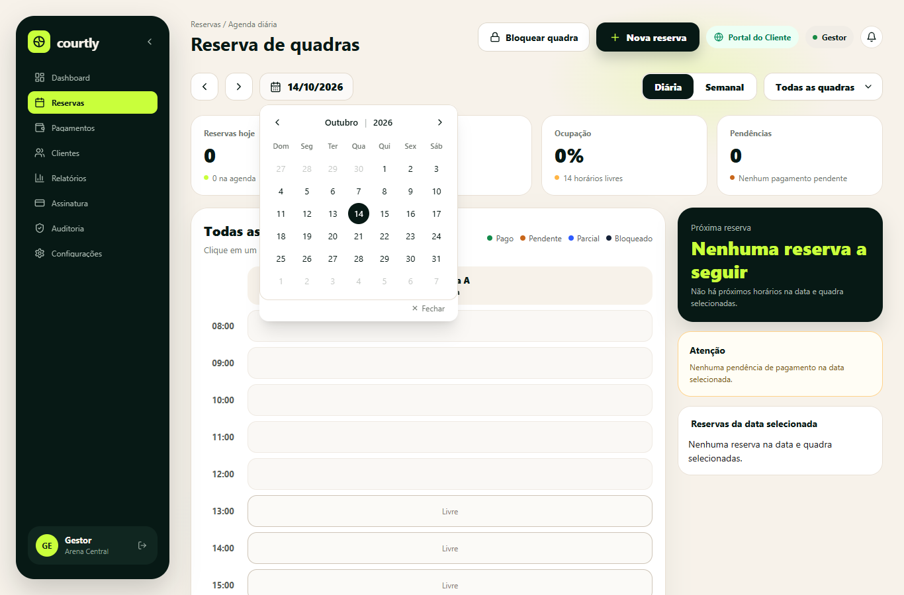
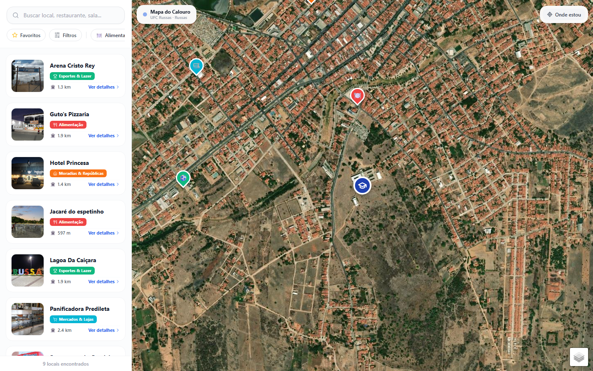

Analista de Requisitos · Aprova UFC
2026 – atual
Levantamento, análise e documentação de requisitos funcionais e não funcionais, com foco em rastreabilidade e especificação de software.
Construo aplicações web para resolver problemas reais — da organização de uma arena à adaptação de quem chega a uma cidade nova. Aqui você encontra meu perfil, as tecnologias que uso e os projetos que fazem parte da minha trajetória.
desenvolvedor de software
explorador de possibilidades
Gosto de transformar necessidades do cotidiano em aplicações que fazem sentido para quem usa. Meus projetos passam por gestão de negócios, mapas e organização de atividades.
Entre interface, backend e regras de negócio, exploro como conectar as peças para tirar uma ideia do papel.
Estudante de Engenharia de Software · Backend, APIs e requisitos
Atuar no desenvolvimento de backend, APIs e integrações, com foco em análise de requisitos e implementação de sistemas.
2026 – atual
Levantamento, análise e documentação de requisitos funcionais e não funcionais, com foco em rastreabilidade e especificação de software.
2026 – atual
Atividades de ensino, pesquisa e extensão em tecnologia junto à comunidade de Russas.
2025 – 2026
Prototipação de interfaces e fluxos de experiência do usuário em projetos da empresa júnior.
Projeto pessoal · 2026
SaaS multi-tenant para gestão de arenas esportivas, com APIs e integração com Mercado Pago para cobranças.
Node.js · APIs · Mercado Pago · Ver código ↗
Projeto acadêmico · 2026
Mapa de locais e serviços com busca, avaliações, rotas e painel administrativo. Desenvolvimento individual, com testes automatizados e documentação de requisitos.
React · TypeScript · Supabase/PostgreSQL · OSRM · Ver código ↗
Projeto acadêmico em grupo · 2026
Sistema web com API REST, autenticação e painel administrativo para gerenciar ocorrências de itens achados e perdidos.
Node.js · Express · SQLite · Ver código ↗
Projeto pessoal · 2026
Gestão de pacientes e agendamentos, com autenticação e painel administrativo.
Node.js · React · Ver código ↗

Gestão de arenas esportivas
Plataforma SaaS multi-tenant para quadras de beach tennis, vôlei de praia e futevôlei. Conecta a reserva e o pagamento via Pix do atleta ao painel do gestor, com agenda, controle de clientes, cobranças via Mercado Pago e conciliação financeira.

Guia da cidade e do campus · UFC Russas
Criado para ajudar quem chega de outra cidade para estudar na UFC Russas a encontrar lugares, comércios e serviços. Reúne busca por categoria, avaliações, favoritos e cálculo de rotas pela API OSRM a partir do campus ou da localização do usuário.
Conheça os repositórios, explore o código e acompanhe os próximos projetos. O ponto de encontro é meu GitHub.